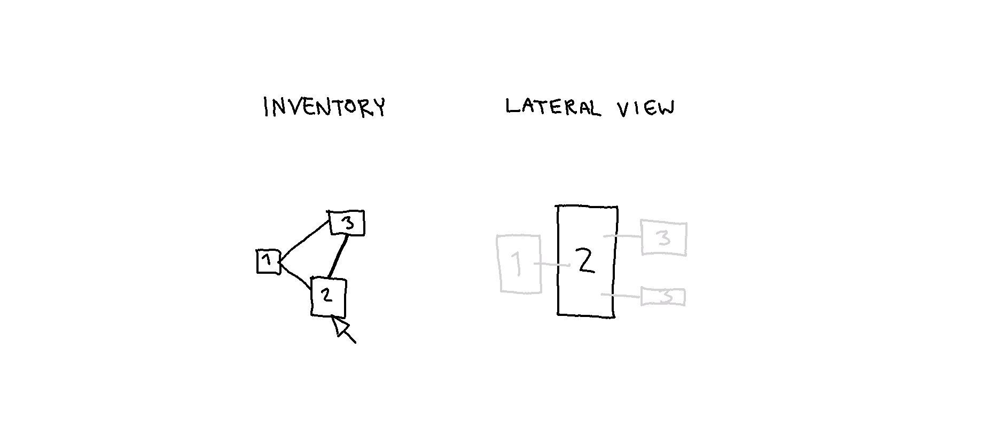
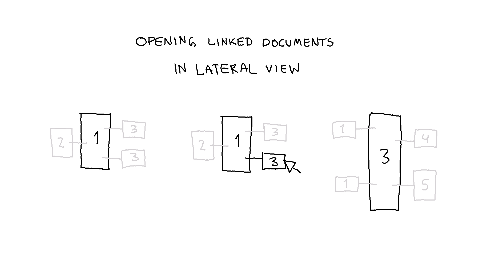
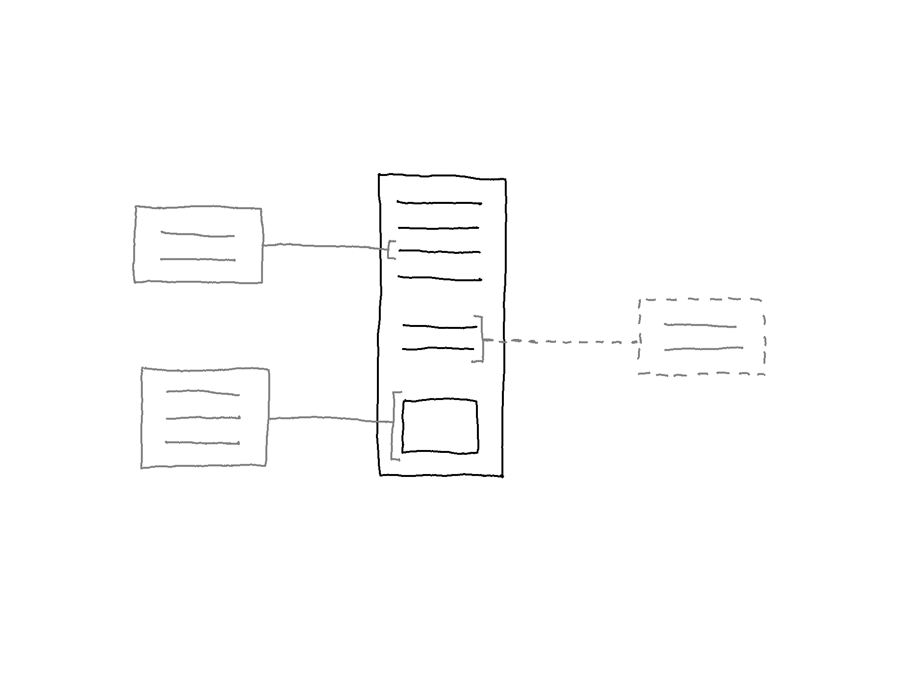
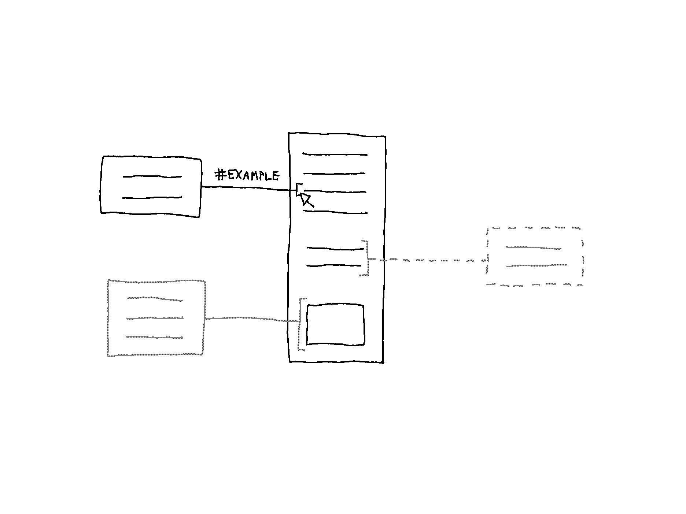
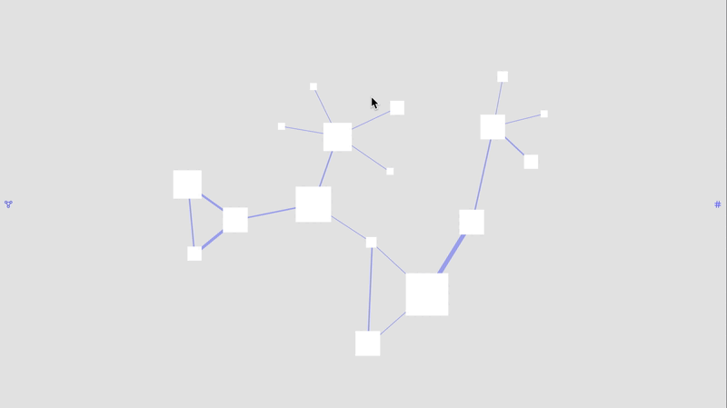
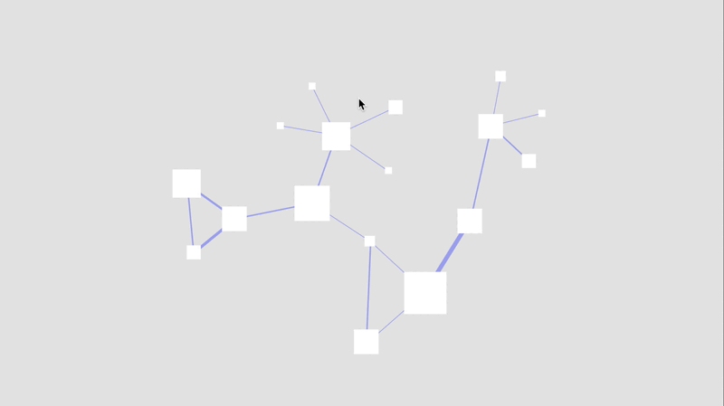

Prototype: Linked Documents Represented As Aliases
Alterations and additions:
- Lateral Mode renamed Lateral View
- Redesign of Lateral View
- The preview icons (seen in a previous entry) are now aliases positioned on the sides of the open document.
- Only one document can be open, positioned in the middle.
In this entry, one document is the main document, and its linked documents are represented as aliases.
Opening Documents
Inventory View
The image below shows how to open a document in Inventory View to enter Lateral View.

Lateral View
While in Lateral View, it is possible to open the linked documents. Note that each linked content item can be of the same document, in which case there are multiple aliases of the same document (in the example below, document 1).

Aliases
The aliases show the particular linked content item (i.e., inactive) on the side of the open document. In the example below, there are two taglinks and one transclusion.

Upon hovering on a link, the alias comes into view (i.e., active) together with the #Label of the taglink.

Interactive Prototype
The interactive prototypes below explore how to indicate active and inactive states and how to animate multiple aliases of the same document.
Active/Inactive Aliases
Two versions of aliases are shown below.
Color Code Version

Opacity Version

Animating Multiple Aliases of the Same Document
If the open document has several links to the same document, then that document has multiple aliases. In the first image below, multiple aliases appear before a document is open, and in the second image, aliases appear after the middle document is open.

